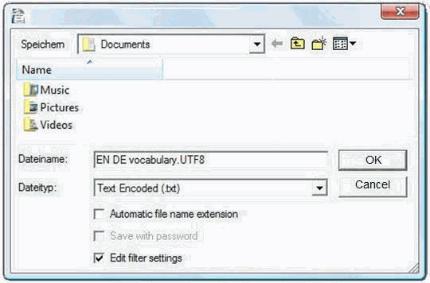
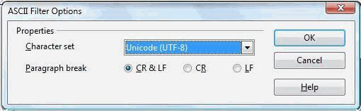

Glossare sind Dateien, die manuell geschaffen und für den Gebrauch in OmegaT aktualisiert werden.
Wenn ein OmegaT Projekt ein oder mehr Glossare enthält, werden die Ausdrücke, die sich sowohl in Glossaren als auch im aktiven Segment befinden, im Glossar Fenster angezeigt.
Um ein vorhandenes Glossar zu verwenden, legen Sie es einfach beim Erzeugen des Projektes in den /glossary Ordner. Wenn ein Projekt geöffnet wird, entdeckt OmegaT automatisch Glossar-Dateien in diesem Ordner. Die Ausdrücke im aktiven Segment, die OmegaT in der Glossardatei(en) findet, werden im Glossar-Fenster angezeigt.
Das Wort vor dem Zeichen = ist der Ausdruck im Quelltext und dessen Übersetzung bzw. Übersetzungen befinden sich hinter dem =. Ein Eintrag in das Glossar kann einen Kommentar beinhalten (siehe "transitive Verb" für den zweiten Posten). Die Glossar-Funktion findet in den Glossaren nur genaue Ausdrücke (d.h. findet keine flektierte Formen usw. ) Neue Ausdrücke kann man während der Übersetzung (zum Beispiel in einem Text Editor) manuell in die Datei bzw. Dateien einfügen; die neu eingefügten Wörter werden aber nur nach dem erneuten Laden des Projektes erkannt.
Glossar-Dateien sind einfache Klartext-Dateien mit drei durch Tabulator-Zeichen getrennten Spalten für das Quellwort (erste Spalte) und das Zielwort (zweite Spalte). Die dritte Spalte kann für Zusatzinformation verwendet werden. Glossar-Dateien können entweder in der für das System normalen Kodierung sein (durch die .tab Erweiterung gekennzeichnet) oder in UTF-8 (in dem Fall sollte die Erweiterung .utf8 sein). Die Unicode (d.h. UTF-8) Kodierung ist aus offensichtlichen Gründen zu bevorzugen.
Die Methode, wenn sie einigermaßen vorsichtig befolgt wird, ist narrensicher. Man braucht OpenOffice.org Writer dazu, also bitte - wenn noch nicht getan - OpenOffice.org herunterladen und installieren. OpenOffice.org starten und ein neues Textdokument erzeugen bzw. "OpenOffice.org Writer" starten.
Ihre Glossareinträge wie folgt in das leere Dokument eintragen: Quellausdruck, Tabulator, Zielausdruck, Tabulator, ein Kommentar oder eine Erklärung des Ausdruckes, dann Enter. Tabulator ist die Taste auf der linken Seite der Tastatur. Wenn Sie keinen Kommentar eingeben wollen, kann das zweite Tabulator-Zeichen entfallen. Ein "Ausdruck" kann ein einziges Wort oder eine Redewendung sein. Der nächste Ausdruck und seine Übersetzung werden in der zweiten Zeile eingegeben. Dann das dritte Paar der Ausdrücke in der Zeile drei und so weiter.
Wenn Sie mit der Eintragung der Ausdrücke fertig sind, werden Sie zwei "Spalten" der Ausdrücke haben, Quell-Ausdrücke links und die Übersetzungen in der Zielsprache rechts, dazu möglicherweise noch eine dritte Spalte mit Ihren Kommentaren und Erklärungen. Die Tabs (→ im Beispiel unten) und Eingabe-Zeichen (¶ ) werden sichtbar, wenn man in der Standardleiste von Writer die ¶ Ikone anklickt. Hier ein paar Zeilen aus einem Englisch-Deutschen Glossar
word →Wort→das (-/e/s, Wörter/-e)¶
small house→Häuschen→das, (pl Häuschen)¶
dog →Hund→m, f Hündin ¶
horse→Pferd→n, m Hengst f Stute n Fohlen¶
Benutzen Sie NICHT die "Spalten"-Funktion in OpenOffice.org: trennen Sie die Ausdrücke in der Quell- und Zielsprache mit einem einzigen Tabulator.
Wenn Sie mit den Einträgen fertig sind, wählen Sie Datei > Speichern unter. In das Feld "Dateinamen" den Namen für die Datei eingeben, mit der Erweiterung ".utf8" (z.B. "MyGlossary.utf8"). Im "Dateityp", "Text kodiert (.txt.)" wählen. Dann die Option "Automatische Dateinamenserweiterung" abwählen und "Filtereinstellungen bearbeiten" wählen:

Mit OK bestätigen. Eine Dialogbox mit zwei Optionen erscheint: "Ja" und "Nein". "Ja" wählen, um in dem Format für kodierte Texte zu speichern.
Im Dialog für die ASCII Filter Optionen (siehe unten), "Unicode (UTF-8)" als den Zeichensatz wählen:

Mit OK bestätigen.
Nachdem ein OmegaT Projekt erzeugt wurde, diese Datei in das Projekt-Verzeichnis \glossary kopieren oder verschieben. Ist das Projekt schon offen, muss es nach dem Kopieren erneut geladen werden. Man kann die Glossar-Datei parallel zum Übersetzen ändern, doch werden die Änderungen im Projekt nur durch ein erneutes Laden sichtbar.
Wird ein neues Segment mit einem Quelltextbegriff zum Übersetzen geöffnet, erscheinen im Glossar-Fenster die Einträge, die im Glossar (oder Glossaren, es können mehrere verfügbar sein) zu finden sind.
Mit Trados MultiTerm erzeugte Glossare zum Beispiel kann OmegaT ohne weiteres verwenden, vorausgesetzt dass die exportierte Dateien die .tab Erweiterung haben und dass die Quell und Zielfelder die ersten zwei Spalten in der Text-Datei sind. Wenn man mit der Systemoption "Tab-begrenzter Export" exportiert, muss man die ersten 5 Spalten (Seq. Nr, Date created etc.) vor den zwei Einträgen von Bedeutung löschen.
es wurde keine Glossar-Datei im "glossary"-Ordner gefunden
Die Glossar-Datei ist leer
die Einträge sind nicht durch TAB Zeichen getrennt
die Glossar-Datei hat nicht die richtige Erweiterung (.tab oder .utf8)
Es gibt keine EXAKTE Übereinstimmungen zwischen den Einträgen im Glossar und im Quelltext des Dokumentes - z.B. weil der gesuchte Eintrag im Segment im Plural auftritt.
die Glossar-Datei hat nicht die richtige Kodierung
Im aktiven Segment gibt es keine Begriffe, die im Glossar zu finden wären.
Man hat ein oder mehrere der oben genannten Probleme gelöst, das Projekt wurde aber nicht erneut geladen.
die Erweiterung und die Datei-Kodierung passen nicht zusammen.